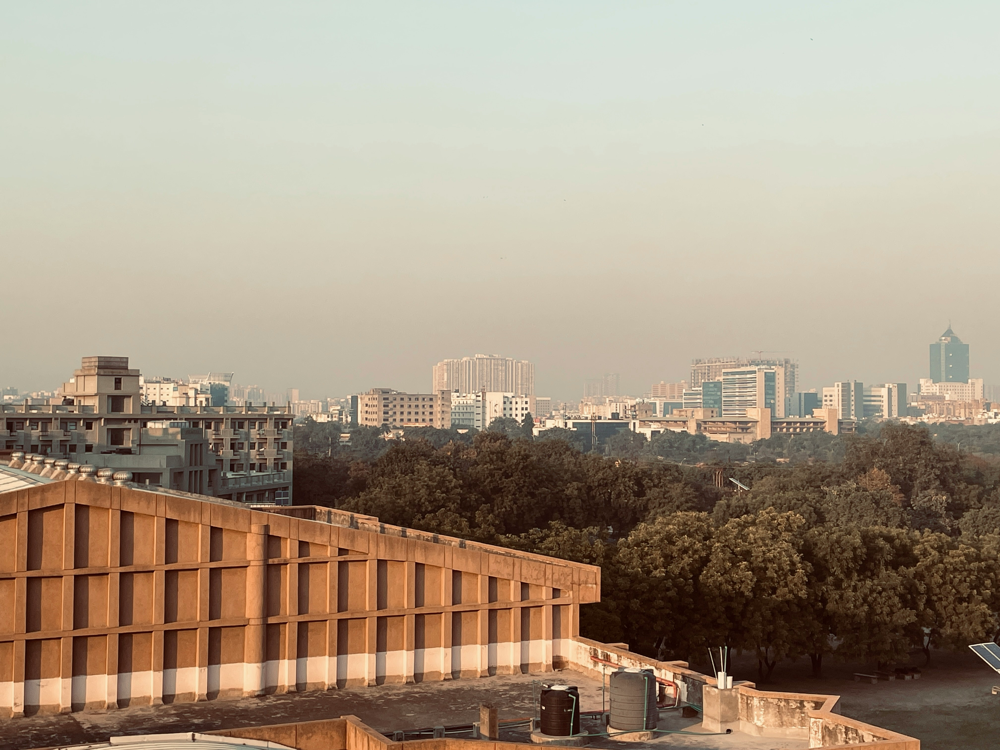
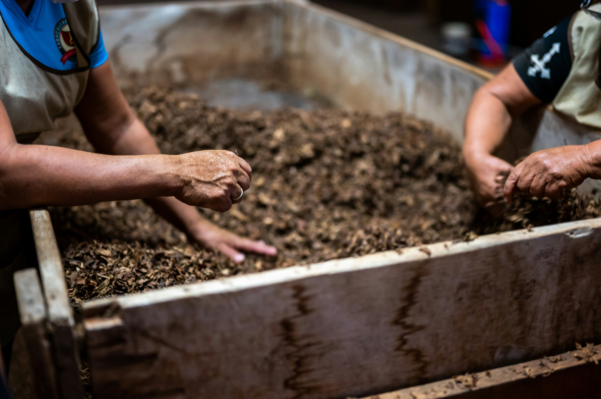
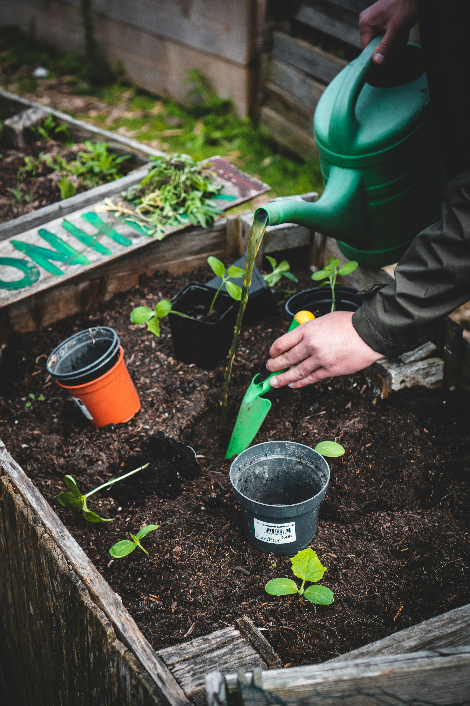
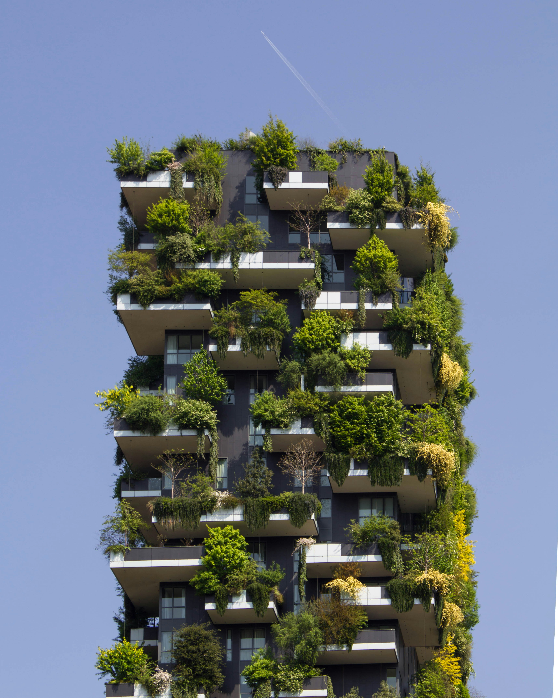
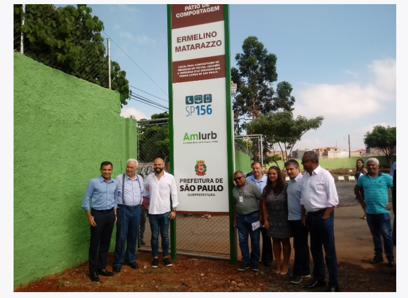

ODS 11
Cidades e Comunidades Sustentáveis
Principal foco do projeto. Busca tornar cidades mais inclusivas, seguras, resilientes e sustentáveis, com melhor gestão de resíduos.
Uma iniciativa voltada ao melhor manuseio de resíduos orgânicos em escolas, conectando compostagem, inovação e consciência ambiental.
O O.T.D.S é um projeto escolar voltado ao melhor gerenciamento de resíduos orgânicos em escolas, promovendo conscientização ambiental, compostagem e inovação sustentável.
A proposta incentiva alunos e comunidades escolares a entenderem o destino dos resíduos, reduzindo desperdícios e contribuindo para cidades mais limpas, organizadas e sustentáveis.
Separação e descarte correto dentro do ambiente escolar.
Transformação de resíduos orgânicos em adubo sustentável.

Escolas analisadas
Toneladas reaproveitadas
ODS conectadas
O projeto tem a ODS 11 como principal e usa as ODS 2 e 9 como referências.

Principal foco do projeto. Busca tornar cidades mais inclusivas, seguras, resilientes e sustentáveis, com melhor gestão de resíduos.

Relaciona compostagem, hortas escolares e reaproveitamento orgânico para apoiar alimentação e agricultura sustentável.

Inspira soluções tecnológicas e estruturais para melhorar o descarte, a coleta e o tratamento de resíduos.
Clique na lixeira para o lixo cair, desaparecer e aumentar o nível.
Lixeira vazia. Clique para começar.
Essas referências ajudam a entender como sustentabilidade, compostagem e educação ambiental podem funcionar na prática.
Atua no fortalecimento de sistemas alimentares seguros, sustentáveis e acessíveis.
A Fundação Cargill promove a prosperidade das comunidades por meio de iniciativas de inclusão, equidade e inovação. Com voluntários, parceiros e organizações da sociedade civil, apoia projetos socioambientais e negócios de impacto em várias regiões do Brasil.
Referência para hortas urbanas, educação ambiental e cultivo sustentável.
A iniciativa pode ser entendida como uma proposta de valorização das hortas em espaços comunitários e escolares, aproximando pessoas do cultivo, do cuidado com o solo e do reaproveitamento de resíduos orgânicos por meio da compostagem.
Ação comunitária ligada a soluções baseadas na natureza e adaptação climática.
A iniciativa aparece conectada à Cartilha de Soluções Comunitárias Baseadas na Natureza, elaborada pelo Ateliê Navio junto à Rede Brasileira de Urbanismo Colaborativo, com apoio ao Programa Cidades Verdes Resilientes do Ministério do Meio Ambiente e apoio financeiro da Urban95 - Fundação Van Leer.
Empresa de impacto socioambiental focada na redução do descarte de resíduos.
A Morada da Floresta acredita na integração entre o ser humano e a inteligência da natureza. Suas soluções buscam transformar consciência e comportamento para reduzir o descarte de resíduos no meio ambiente e gerar impacto positivo no planeta.

Projeto da Prefeitura de São Paulo voltado à compostagem urbana.
Inaugurado em 09/01/2019, o Pátio de Compostagem Ermelino Matarazzo foi o quinto da cidade de São Paulo e o terceiro da Zona Leste. O espaço ajuda a reduzir resíduos enviados aos aterros e diminui emissões de dióxido de carbono, transformando matéria orgânica de feiras livres em adubo e composto orgânico.